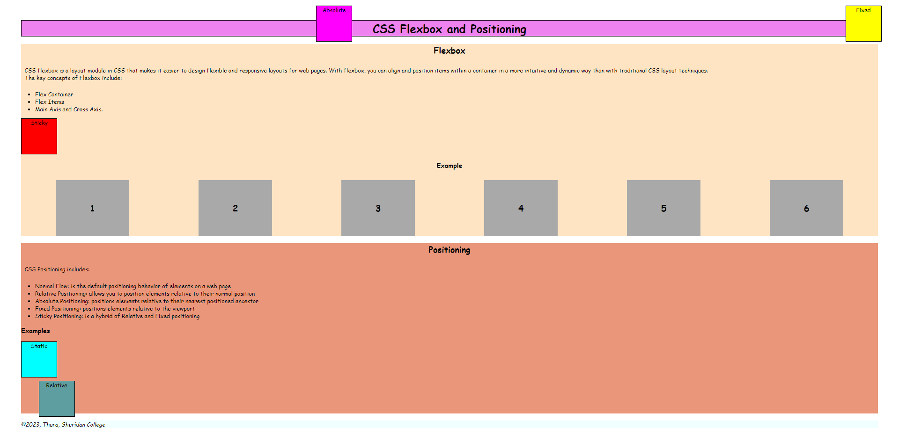
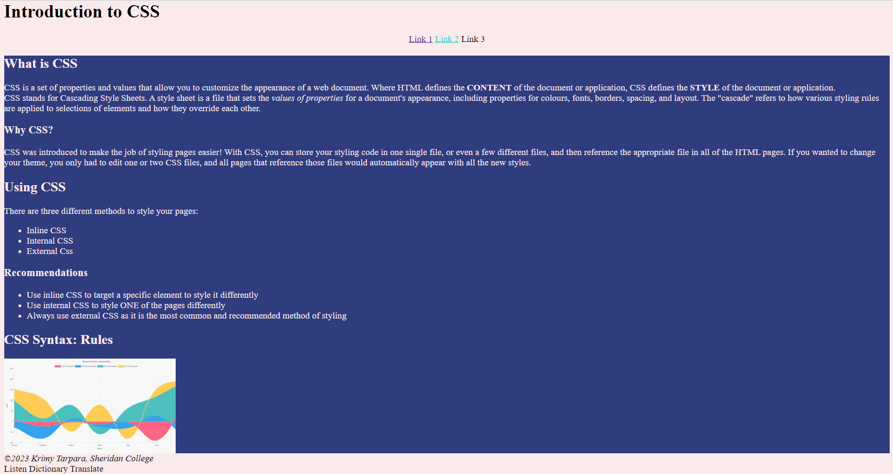
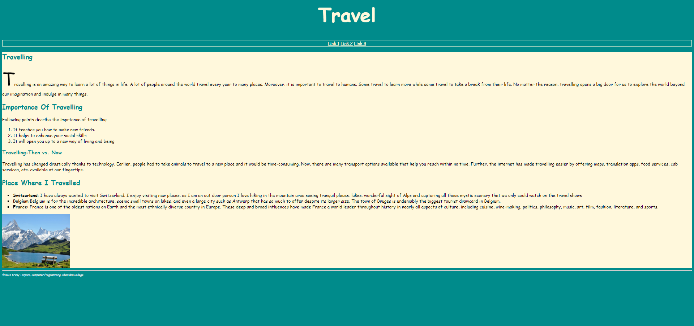

I have successfully created a webpage using fundamental HTML elements. I have incorporated an image into my webpage using the image tag, which is used to embed images in an HTML document. Additionally, you have used the break tag to introduce line breaks and separate content on my page. This tag is an empty tag, meaning it has no closing tag, and is used to insert a single line break. By using these basic HTML elements, I have taken the first steps in creating a well-structured and visually appealing webpage.
I have effectively utilized an external CSS file and CSS positioning properties to control the layout of elements on my webpage. CSS positioning is a powerful tool that allows you to precisely control the placement of elements on your page using properties such as position, top, right, bottom, and left. I have used various positioning values, including sticky, absolute, fixed, normal, and relative, to achieve your desired layout. By using an external CSS file, I have kept my styles separate from my HTML content, making it easier to maintain and update my webpage.
I have successfully created a webpage using HTML and external CSS for styling. By using an external CSS file, I have kept my styles separate from my HTML content, making it easier to maintain and update my webpage. Additionally, I have added three navigation links to my page, which can help visitors navigate my site and find the information they are looking for. This is a great start to building a functional and visually appealing website.
I've accomplished the creation of a webpage using HTML and employed external CSS for design enhancements. Through the utilization of an external CSS file, I've effectively separated the styles from the HTML content, simplifying the management and future updates of the webpage. Furthermore, I've integrated three navigation links, facilitating seamless navigation for visitors seeking specific information. Incorporating an image has further enriched the webpage's visual appeal. This marks an excellent initial step toward the development of a functional and aesthetically pleasing website.